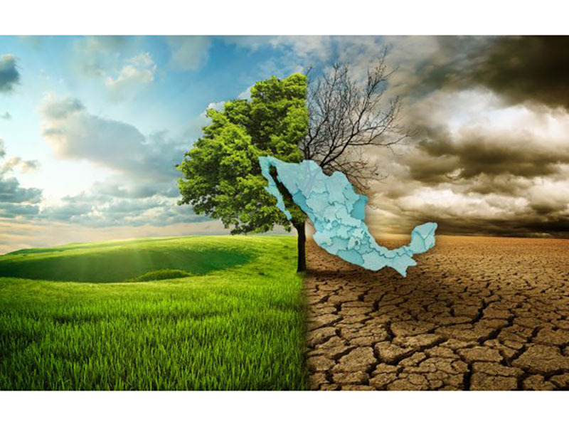

México ha experimentado cambios climáticos como el aumento de la temperatura, la modificación de la precipitación y el incremento de las emisiones de gases de efecto invernadero
La precipitacion ha aumentado en el centro y sur del pais, mientras que ha disminuido en el noroeste. La distribucion de la precipitacion entre las estaciones del dia ha cambiado, con incrementos significativos en verano.
El pais se ha vuelto mas calido desde la decada de 1960. Las temperaturas promedio a nivel nacional aumentaron 0.85 C y las temperaturas invernales 1.3C. Se ha reducido la cantidad de dias mas frescos desde los dias sesenta del siglo pasado y hay mas noches calidas